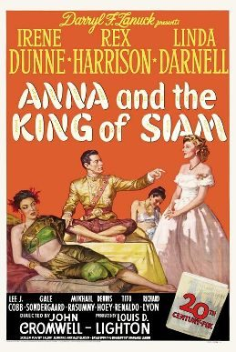

THE STANFORD THEATRE
Now Showing
·
Upcoming
·
Past
·
Search
January 7 - 30, 2000
Winter 2000
9 bills
January 7

Anna and the King of Siam (1946)
120 min
Unfaithfully Yours (1948)
128 min
January 8, 9
Anna and the King of Siam (1946)
120 min
Unfaithfully Yours (1948)
128 min
January 14
The King and I (1956)
133 min
Anastasia (1956)
105 min
January 15, 16
The King and I (1956)
133 min
Anastasia (1956)
105 min
January 17 - 20
The King and I (1956)
133 min
Anastasia (1956)
105 min
January 21
South Pacific (1958)
171 min
January 22 - 23
South Pacific (1958)
171 min
January 28
The Sound of Music (1965)
174 min
January 29, 30
The Sound of Music (1965)
174 min